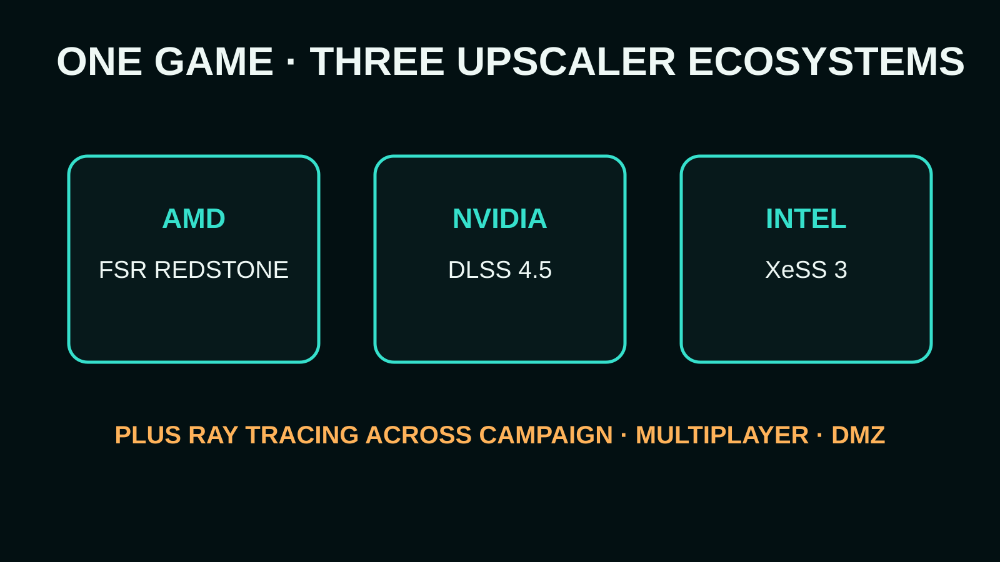

MINIMUM
- Ryzen 5 1400 / Core i5-6600
- 8 GB RAM
- RX 470 / GTX 970–1060 / Arc A580
- 3 GB VRAM
- 115 GB SSD
CALL OF DUTY · PC GAMING · 1 OCT 2026
Infinity Ward and Beenox have published the final PC feature set for Modern Warfare 4: a 90 FPS recommended target, ray tracing in every major mode, three competing AI upscalers, a built-in benchmark and more than 800 settings.

Call of Duty’s PC requirements are usually interesting because the series has to serve two audiences at once: competitive players chasing latency and frame rate, and blockbuster players expecting a technically lavish campaign. Modern Warfare 4 is leaning hard into both.
Activision’s September 29 PC briefing says the recommended configuration targets 90 FPS in multiplayer at High settings. The listed GPUs are an AMD Radeon RX 6600 XT, Nvidia GeForce RTX 3060 Ti or Intel Arc B580, paired with 16 GB of RAM and a Ryzen 5 3600 or Core i7-8700K.
Official launch specifications · TPM 2.0 + Secure Boot required.
PC requirement tables traditionally describe recommended hardware around a 60 FPS experience. MW4 explicitly setting its recommended multiplayer bar at 90 FPS says something about where mainstream competitive PC gaming has moved. High-refresh displays are no longer treated as exotic hardware.
The minimum remains unusually broad: Ryzen 5 1400 or Core i5-6600, 8 GB RAM, and an RX 470, GTX 970/1060 or Arc A580. Every tier requires an SSD, with Activision listing 115 GB at launch.
Activision says ray tracing is supported in Campaign, Multiplayer and DMZ. Its high-quality 4K-upscaled RT tier steps up sharply to an RX 9070 XT or RTX 5070 Ti with 16 GB VRAM, 32 GB RAM, and a Ryzen 7 3700X or Core i7-10700K.

That distinction is useful: the RTX 3060 Ti-class recommendation is not the “everything maxed with RT” spec. Players should not read 90 FPS and the ray-tracing bullet point as one combined promise.
Modern Warfare 4 ships with AMD FSR Redstone, Nvidia DLSS 4.5 and Intel XeSS 3, plus Filmic SMAA T2X. That breadth matters in a huge cross-vendor multiplayer game because upscaling is increasingly part of the expected rendering pipeline rather than an optional rescue switch for weak GPUs.

Beenox is adding sub-frame mouse polling, a built-in benchmark reporting average FPS, CPU/GPU behaviour, ping and input latency, and a PC-exclusive Enhanced FOV system designed to expand peripheral vision without changing the centre FOV. Muzzle effects are dynamically masked around the point of aim to preserve target visibility.
The game also drops the older random weapon-bloom behaviour: Activision says bullets now originate according to barrel position in both ADS and hip-fire states. That is a gameplay change disguised inside a PC technology article.
“Advanced Shader Delivery” replaces the familiar shader-preloading workflow by distributing precompiled shaders ahead of play on supported PC platforms. Activision says using it requires the Xbox PC app even if the game itself is on another supported PC storefront. Updates during normal boots are also designed not to trigger the traditional restart loop.
There is a security cost to the broad hardware support: TPM 2.0 and Secure Boot are mandatory, Intel Arc requires Resizable BAR, and only Intel/AMD processors with AVX support are listed at launch.
STATIC’s take: the most important number here is not 4K or ray tracing. It is 90. Calling 90 FPS the recommended multiplayer experience acknowledges how people actually buy gaming monitors in 2026. If Beenox can hit that target consistently on an RTX 3060 Ti or RX 6600 XT without ugly reconstruction compromises, MW4 could be a much better PC release than its feature list alone suggests.
Everything above — specifications, 90 FPS target, ray tracing across the three major modes, upscaler support, benchmark, Enhanced FOV, Advanced Shader Delivery, TPM/Secure Boot requirements and October 23 launch — comes directly from Activision’s official PC briefing. Performance on real retail hardware remains unverified until independent benchmarks arrive.
Primary source: Call of Duty Staff, “Call of Duty: Modern Warfare 4 PC Trailer, Tech Updates, and More,” September 29, 2026. Launch date and game-mode context cross-checked against the official Modern Warfare 4 site.